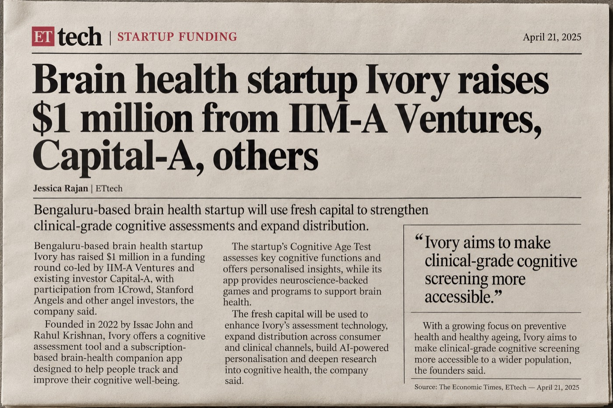
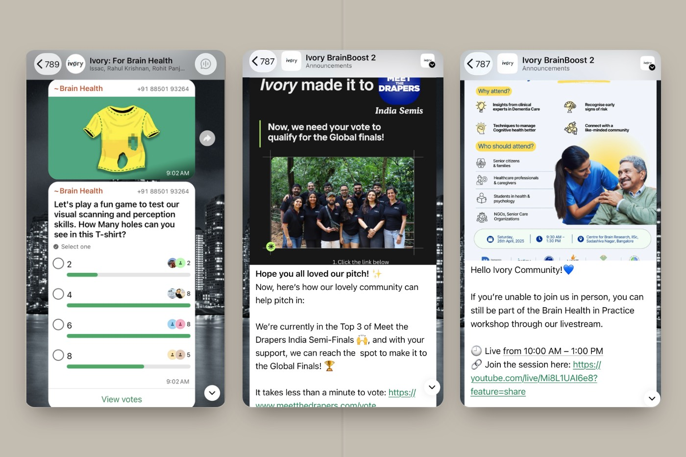

Content & community
Hey there, Good MorningEvening!
Selling something once is easy. Getting someone to come back is not. I build content, communities and marketing that earn trust. All of it with AI as my chief of staff.
- Mehr Patni

- Creative thinking
- GTM strategies
- AI systems builder
- Content & community
- Content writer
- Performance content
- UI/UX expert
- Consumer psychology
- Campaign analytics
- $1M raised on television
All things AI
Tools I use. Systems I built.
Playbook
Popular GTM strategies I swear by.
a cold outreach reply
worth building
to reach someone
Cookie boxes
Cold voice notes
Post mentions
Warm emails
Community reachouts
Event networking
Go to market
Every portfolio shows outputs. This is the diagnosis.
$1M raised across Shark Tank India and Meet the Drapers.

Wrote the pitch that turned cognitive neuroscience into a story a television audience could follow.
Launched into a room, not a void.

Built a 3,000 member WhatsApp community of caregivers before the product shipped.
Read the case studyOne voice across the UK, US, Malaysia and UAE.
Defined the tone of voice through a rebrand, wrote every surface to it, cleared each word through US SEC compliance.
Free to take
The GTM shelf. Open, and worth your time.
Brands & archive
Shipped for MNCs, startups and everything between.


Pitch deck · FelloA GTM teardown of an AI real-estate platform, built unasked.
Pitch deck · The Gulf LayerA content audit of a design platform's Arabic library, built from its own sitemap.
Asian Paints websiteThe content repository, built on Adobe Experience Manager.
Product descriptionsProduct pages written to close the sale.
Amazon A+ contentEverest, Freudenberg Gala and Bergner, on Amazon.
EditorialWahed's journal. SEC-compliant financial writing for 400,000+ investors.
E-books & PlaybookThe Brain Health Playbook and Brain Health Matters, built as lead engines.
Health reportsClinical cognitive reporting, written for patients and clinicians.
Performance adsApp ads across feature launches.
BrochuresPrint and collateral.
Comic mascotCharacter and illustration.
Outside work
Same person, fewer slides.


From making financial advice sound legal to turning brain health into binge-worthy content. Now I build the machine that tells it at scale.